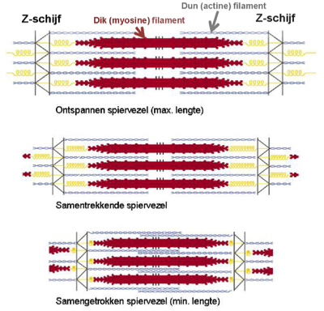
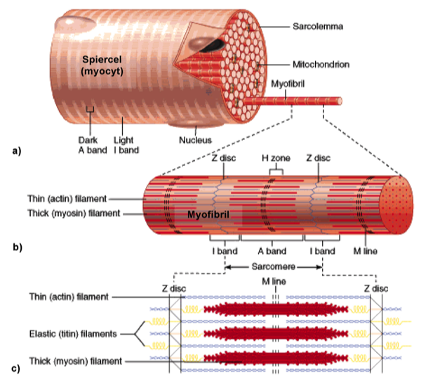

Organisatie van actine en myosine in ‘dwarsgestreepte’ spieren:
In dwarsgestreepte spieren vormt actine (samen met enkele andere eiwitten) de zogenoemde ‘dunne’ filamenten. Deze dunne actinefilamenten zitten vast ter hoogte van de Z-schijf (dit is een eiwitcomplex). Vanuit deze Z-schijf lopen de actinefilamenten evenwijdig aan elkaar en in 2 tegenovergestelde richtingen. Op die manier worden actinefilamenten mooi ten opzichte van elkaar uitgelijnd (allignatie).
Myosinemoleculen (welke uit een kop-en staartgedeelte bestaan) assembleren tot ‘dikke’ filamenten, waarbij de koppen uit de filamenten steken. Deze koppen zorgen voor de interactie met actine, die noodzakelijk is voor contractie. Ook hier zullen verschillende eiwitcomplexen ervoor zorgen dat de moleculen op hun plaats blijven.
Actine- en myosinefilamenten zijn ‘gemonteerd’ tussen 2 Z-schijven. Deze structuur heet een sarcomeer. Bij contractie zullen de myosinekoppen de actinefilamenten naar het midden van het sarcomeer trekken, zodat de Z-schijven naar elkaar toe bewegen en het sarcomeer verkort.
In dwarsgestreepte spieren vormt actine (samen met enkele andere eiwitten) de zogenoemde ‘dunne’ filamenten. Deze dunne actinefilamenten zitten vast ter hoogte van de Z-schijf (dit is een eiwitcomplex). Vanuit deze Z-schijf lopen de actinefilamenten evenwijdig aan elkaar en in 2 tegenovergestelde richtingen. Op die manier worden actinefilamenten mooi ten opzichte van elkaar uitgelijnd (allignatie).
Myosinemoleculen (welke uit een kop-en staartgedeelte bestaan) assembleren tot ‘dikke’ filamenten, waarbij de koppen uit de filamenten steken. Deze koppen zorgen voor de interactie met actine, die noodzakelijk is voor contractie. Ook hier zullen verschillende eiwitcomplexen ervoor zorgen dat de moleculen op hun plaats blijven.
Actine- en myosinefilamenten zijn ‘gemonteerd’ tussen 2 Z-schijven. Deze structuur heet een sarcomeer. Bij contractie zullen de myosinekoppen de actinefilamenten naar het midden van het sarcomeer trekken, zodat de Z-schijven naar elkaar toe bewegen en het sarcomeer verkort.

Schematische voorstelling van een sarcomeer, dat gelegen is tussen 2 Z-schijven. Wanneer myosine interageert met actine zullen de
Z-schijven dichter naar elkaar toe getrokken worden en verkort het sarcomeer.
Z-schijven dichter naar elkaar toe getrokken worden en verkort het sarcomeer.
Omdat langs beide kanten van de Z-schijven dunne filamenten aanhechten (dus in twee tegenovergestelde richtingen), krijg je een lineaire aaneenschakeling van sarcomeren die doorloopt over de hele lengte van de spiercel. Deze structuur wordt een myofibril genoemd.
In één enkele dwarsgestreepte spiercel vinden we honderden myofibrillen terug. Alle myofibrillen zijn naast elkaar en parallel met de lengteas van de spiercel gerangschikt. Bovendien alligneren hun sarcomeren. Daardoor krijg je ook in lichtmicroscopische beelden de typische dwarsstreping te zien, namelijk een afwisseling van donkere A-banden en lichte I-banden. Let op: deze dwarsstreping kan je wel enkel terugvinden in een overlangse doorsnede van dwarsgestreepte spiercellen !!

- Overzichtstekening van een skeletspiercel, als voorbeeld van een dwarsgestreepte spiercel. De ‘dwarsstreping’ wordt gevormd door de afwisseling van donkere A-banden en lichte I-banden. Dit bandenpatroon ontstaat doordat alle myofibrillen netjes ten opzichte van elkaar zijn gealligneerd.
- Elke myofibril bestaat uit een aaneenschakeling van sarcomeren. Bij stimulering van de contractie zullen alle sarcomeren tegelijk verkorten, wat verkorting van de volledige myofibrillen en van de volledige spiercel tot gevolg heeft. De A-band bevat de dikke filamenten. Deze A-band bestaat uit: de centrale M-lijn, met hierrond een zone die we de H-band noemen (bevat enkel dikke filamenten). In de rest van de A-banden overlappen dunne en dikke filamenten. Tussen de A-band en de Z-schijf vinden we dan een halve I-band die enkel dunne filamenten bevat.
- Tekening van de moleculaire organisatie van een sarcomeer. Dunne actinefilamenten hechten langs 2 kanten aan de Z-schijf. Myosinefilamenten worden op hun plaats gehouden door elastische (titine) filamenten en eiwitcomplexen die de M-lijn vormen. Deze organisatie vormt de basis van de dwarsstreping!
Sluit dit venster en ga terug naar het zelfstudiepakket